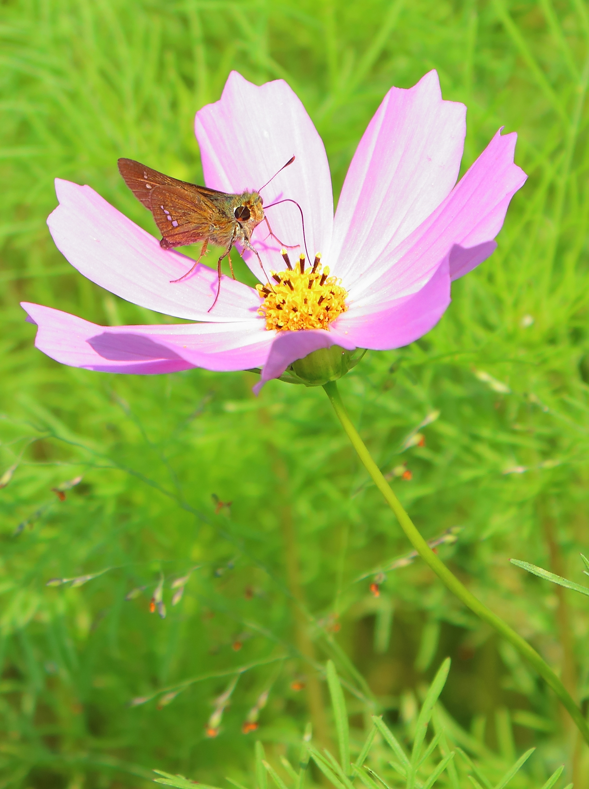

コスモス

コスモス（英語: Cosmos [ˈkɒzmɒs]、学名：Cosmos）は、キク科コスモス属の総称。また、種としてのオオハルシャギク Cosmos bipinnatus Cav.[2] を指す場合もある。アキザクラ（秋桜）とも言う。
一年生の草本[3]。茎は高さ2-3mになり、よく枝を出す。葉は対生で二回羽状複葉[4]。細かく裂け、小葉はほぼ糸状になる。頭花は径6-10cm、周囲の舌状花は白から淡紅色、あるいは濃紅色。中央の筒状花は黄色。葯は黄褐色。通常は舌状花は8個。開花期は秋で、短日植物の代表としても知られる。
秋に桃色・白・赤などの花を咲かせる。花は本来一重咲きだが、舌状花が丸まったものや、八重咲きなどの品種が作り出されている。本来は短日植物だが、6月から咲く早生品種もある。
(引用:wikipedia url:
https://ja.wikipedia.org/wiki/%E3%82%B3%E3%82%B9%E3%83%A2%E3%82%B9
)